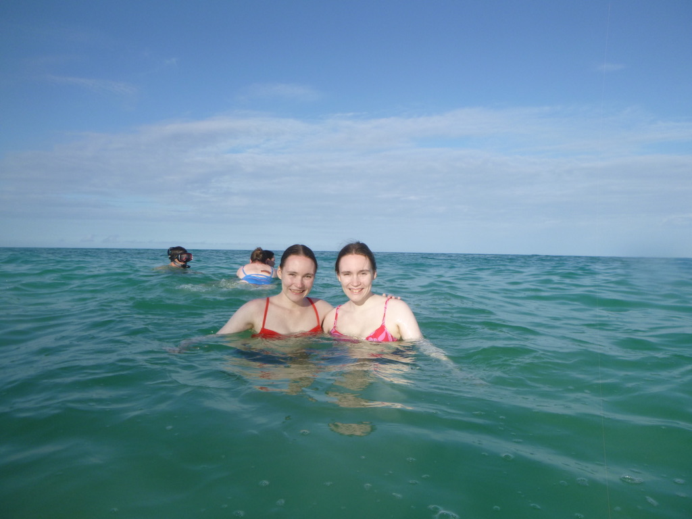
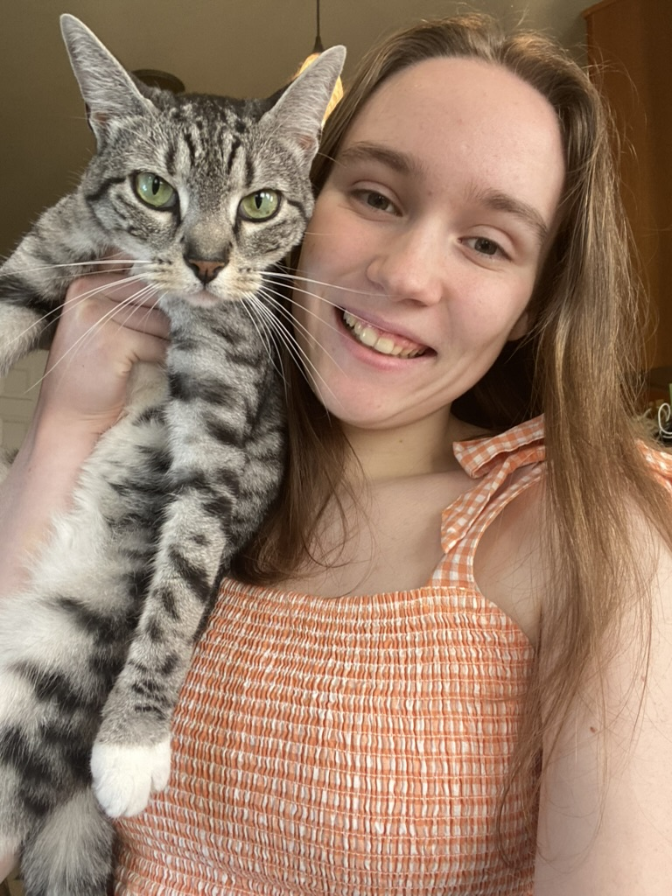
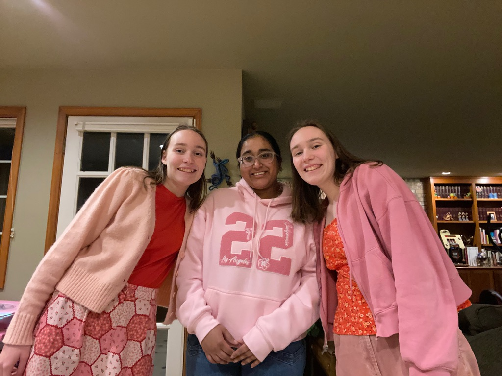
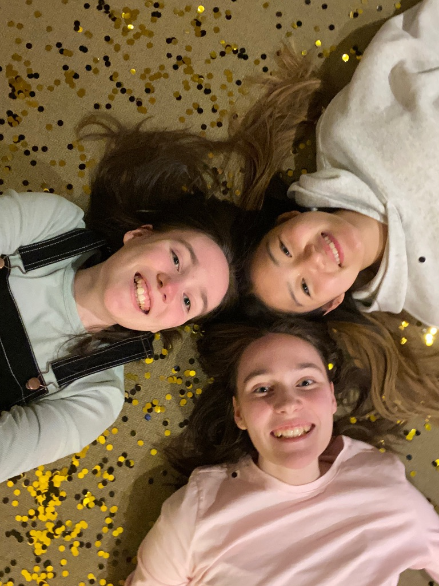
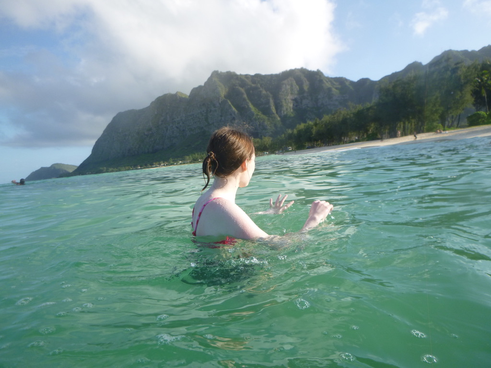
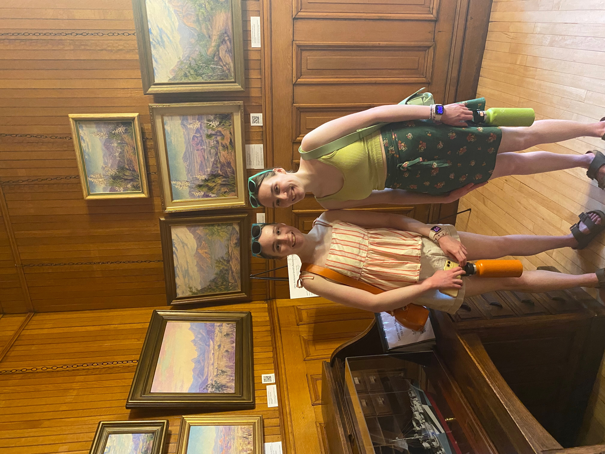
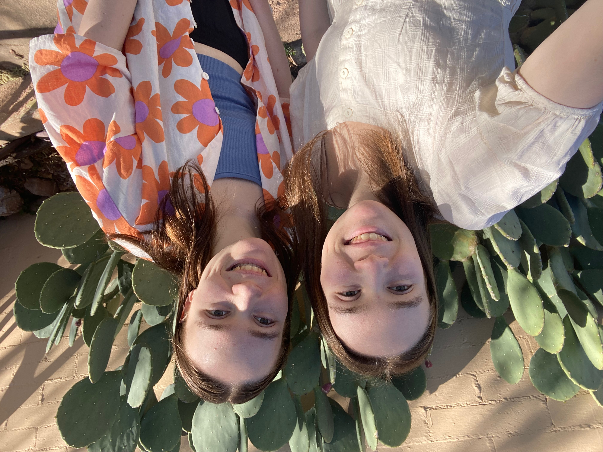

Hi, I'm Abby! 👋
Welcome to my (small but colorful) corner of the internet! I live in Washington state and am a student at the University of Washington Bothell. I love coding, robotics, playing flute and piccolo, baking, and spending time with my friends and family (especially my twin sister, who is by far my best friend). If you can't find me, I'm probably off taking too many pictures of my cats, Domino and Oakley. I absolutely adore sprinkles, stickers, the color green, the Oort Cloud, hippos, and strawberry cake.











